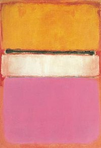
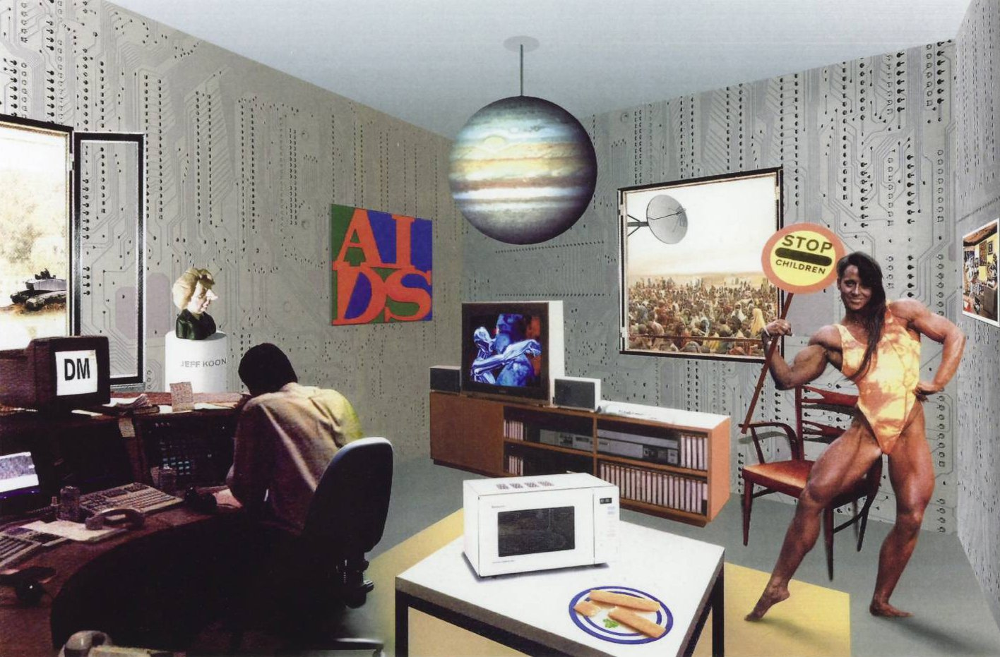

Session 7: America & High Modernity
Modernism continued as High Modernity until the 1960s in New York. High Modernity was an extension of the known movement, reflecting society's confidence in technology and science. It was seen by many as a result of capitalism and industrialisation and showed the potential of human intervention on society.
Modernism was really captured through the Bauhaus and their ideals. This idea of joining art and design with technology seemed revolutionary. With the rise of the Nazis in Germany, the Dada movement came about. This was a reaction to the horrors of war. It mainly consisted of artists who rejected the logic and reason of society. This movement saw artists broaden their artistic boundaries, experimenting with newer mediums such as collage and sculpture. Due to the Nazi takeover of Germany, many artists fled to New York. This influx of European immigrants became the new generation of aspiring artists, some including the likes of Arshile Gorky and Willem de Kooning. New York became the place artists went to explore and flourish. This can be seen through the Guggenheim Museum with the revolutionary spiralling stairway; artists no longer saw boundaries and guidelines, they were there to grow and accomplish.

Arguably one of my favourite artists of this time was Mark Rothko. During the war, art was cold and dull, now, during this new age, art was bright and exciting. Rothko clearly demonstrates this shift through his modern, yet controversial works. Rothko aimed to evoke emotion through his paintings, he wanted a reaction, he wanted people to experience a sense of catharsis from his work. “I’m interested only in expressing basic human emotions—tragedy, ecstasy, doom, and so on,” he declared. “And the fact that a lot of people break down and cry when confronted with my pictures shows that I can communicate those basic human emotions….If you…are moved only by their colour relationships, then you miss the point.”

Richard Hamilton was another artists working at a similar time to Rothko. He was a painter and collage artist. Perhaps one of his most famous works, 'Just what is it that makes today's homes so different, so appealing?' is a collage depicting the main events of the time. Hamilton took clippings from magazines and newspapers to create this piece.